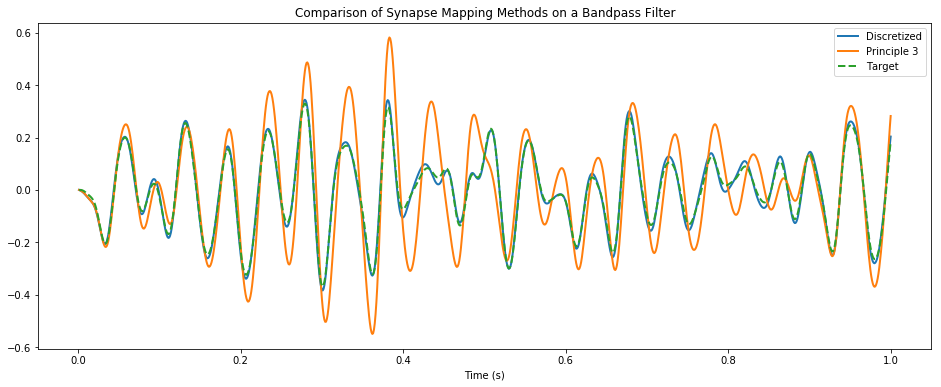

Discrete Principle 3¶
This notebook demonstrates the superior accuracy obtained by using the discretized version of Principle 3 that takes into account the simulation timestep.
[1]:
%pylab inline
import pylab
try:
import seaborn as sns # optional; prettier graphs
except ImportError:
pass
import numpy as np
import nengo
import nengolib
Populating the interactive namespace from numpy and matplotlib
[2]:
def go(sys=nengolib.synapses.Bandpass(20, 5), T=1.0, dt=0.001, n_neurons=200,
synapse=0.02, seed=0, discretized=True, neuron_type=nengo.LIF()):
with nengolib.Network(seed=seed) as model:
stim = nengo.Node(output=nengo.processes.WhiteSignal(T, high=50, rms=0.1, y0=0))
subnet = nengolib.networks.LinearNetwork(
sys, n_neurons_per_ensemble=n_neurons, synapse=synapse,
radii=1.0, dt=dt if discretized else None, output_synapse=synapse,
neuron_type=neuron_type)
nengo.Connection(stim, subnet.input, synapse=None)
p = nengo.Probe(subnet.output)
p_stim = nengo.Probe(stim)
with nengo.Simulator(model, dt=dt, seed=seed) as sim:
sim.run(T)
return sim.trange(), sim.data[p], sim.data[p_stim]
t, disc_actual, expected = go(neuron_type=nengo.LIFRate())
t, cont_actual, expected = go(discretized=False, neuron_type=nengo.LIFRate())
t, ideal, expected = go(neuron_type=nengo.Direct())
0%
0%
0%
0%
0%
0%
[3]:
pylab.figure(figsize=(16, 6))
pylab.title("Comparison of Synapse Mapping Methods on a Bandpass Filter")
pylab.plot(t, disc_actual, linewidth=2, label="Discretized")
pylab.plot(t, cont_actual, linewidth=2, label="Principle 3")
pylab.plot(t, ideal, linestyle='--', linewidth=2, label="Target")
pylab.legend()
pylab.xlabel("Time (s)")
pylab.show()

[4]: